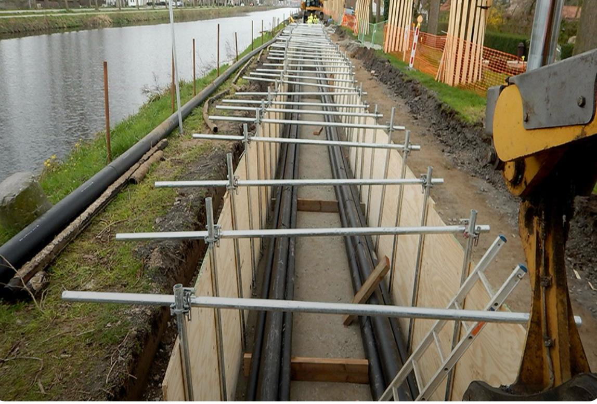
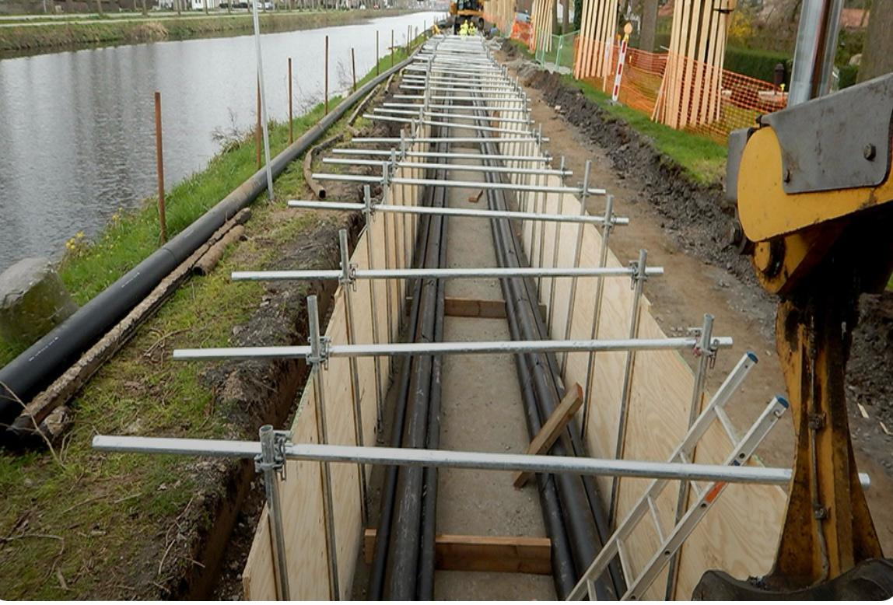

Meer informatie over onze diensten
Wij bieden een breed scala aan grondwerken en infrastructuurwerken aan, van kasseien leggen tot complexe rioleringswerken. Onze ervaren teams zorgen voor kwaliteit, veiligheid en duurzaamheid in elk project.
Contacteer ons voor een vrijblijvende offerte of meer informatie over een specifieke dienst.

 
